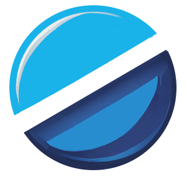

<!DOCTYPE html>
<html lang="nl">
<head>
    <meta charset="UTF-8">
    <meta name="viewport" content="width=device-width, initial-scale=1.0">
    <title>GraphicDesign</title>
    <link rel="stylesheet" href="../styles/style2.css">
</head>
<body>
    <main>
        <aside class="leftContainer">
            <figure class="logoHeader">
                
                
            </figure>
            <div>
                <a class="mainLink" href="">Services</a>
                <div class="submenu hidden">
                    <a href="./services-1.html">Webontwikkeling en Maatwerk Applicaties</a> 
                    <a href="./services-2.html">Grafische Ontwerpdiensten</a>
                    <a href="./services-3.html">Community Manager Diensten</a>
                    <a href="./services-4.html">SEO en SEM Diensten</a>
                    <a href="./services-5.html">Database en Data-analyseservices</a>
                </div>
            </div>
            <div class="containerLink">
                <a class="mainLink" href="">Over ons</a>
                <div class="submenu hidden">

                    <a href="./Insight.html" >Insight</a> 
                    <a href="./mision.html" >Missie</a>
                    <a href="./vissie.html" >Visie</a>       
                </div>
            </div>    
            <div class="containerLink">
                <a class="mainLink" href="">Meer opties</a>
                <div class="submenu hidden">

                    <a  href="./Privatepolicy.html"> Privacy-beleid</a> 
                    <a href="./cookies.html">   Cockie-beleid</a>
                    <a href="" class="hidden"> Voorwaarden</a>    
                </div>
            </div>    
        </aside>

        <hr/>

        <div class="clickIndicator"></div>
        <div class="menu-icon">
            <div class="bar"></div>
            <div class="bar"></div>
            <div class="bar"></div>
        </div>

        <aside class="rightContainer">
        
            <h2 class="title">Grafische Ontwerpdiensten</h2>
           
            <p>Wij bieden uitgebreide grafische ontwerpdiensten om organisaties te helpen impactvolle en consistente 
                visuele inhoud te creëren. Onze diensten omvatten:</p>

            <h2>1. Merkontwerp</h2>
            <ul>
                <li><strong>Visuele identiteit:</strong> Creatie van logo’s, kleurenpaletten, typografie en andere 
                    visuele elementen die de merkidentiteit vertegenwoordigen.</li>
                <li><strong>  Brand Style Guides:</strong>Ontwikkeling van gedetailleerde handleidingen die visuele samenhang in al 
                    het marketingmateriaal garanderen.</li>
                <li><strong>Beveiliging en back-ups:</strong>Garandeer de integriteit en veiligheid van opgeslagen gegevens en voer 
                    regelmatig back-ups uit.</li>
            </ul>
            <figure>
            </figure>

            <h2>2. Ontwerp van marketingmaterialen</h2>  
            <ul>
                <li><strong>Brochures en flyers:</strong>Ontwerp van aantrekkelijk en effectief drukwerk om producten of diensten te promoten.</li>
                <li><strong>Posters, banners, flyers:</strong>Creatie van grootformaat graphics voor evenementen, tentoonstellingen en reclame.</li>
                <li><strong>Digital Advertising Design:</strong>Ontwikkeling van visueel aantrekkelijke banners en advertenties voor online campagnes.</li>
            </ul>
            <figure>
            </figure>

            <h2>3. Web- en interfaceontwerp</h2>
            <ul>
                <li><strong>Websiteontwerp:</strong>Creatie van esthetisch aantrekkelijke en functionele websites.</li>
                <li><strong>User Interface Design (UI): </strong>Ontwikkeling van intuïtieve en aantrekkelijke interfaces voor applicaties en software.</li>
                <li><strong>User Experience (UX):</strong>Optimalisatie van de gebruikerservaring door middel van gebruikersgericht ontwerp.</li>
            </ul>
            <figure>
            </figure>

            <h2>4. Publicatieontwerp</h2>
            <ul>
                <li><strong>Tijdschriften en Catalogi:</strong>Ontwerp van gedrukte publicaties met focus op esthetiek en functionaliteit.</li>
                <li><strong>Boeken en e-boeken:</strong>aantrekkelijke ontwerpen maken voor gedrukte en digitale publicaties.</li>
            </ul>
            <figure>
            </figure>

    </main>

    <script src="../script/index2.js"></script>
    <script src="../script/menu2.js"></script>
</body>
</html>